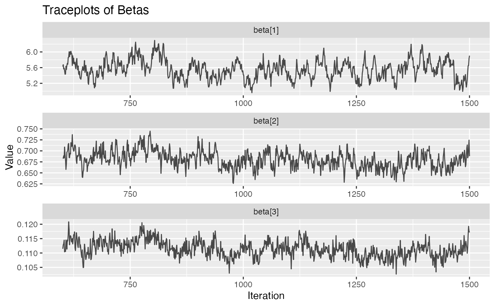
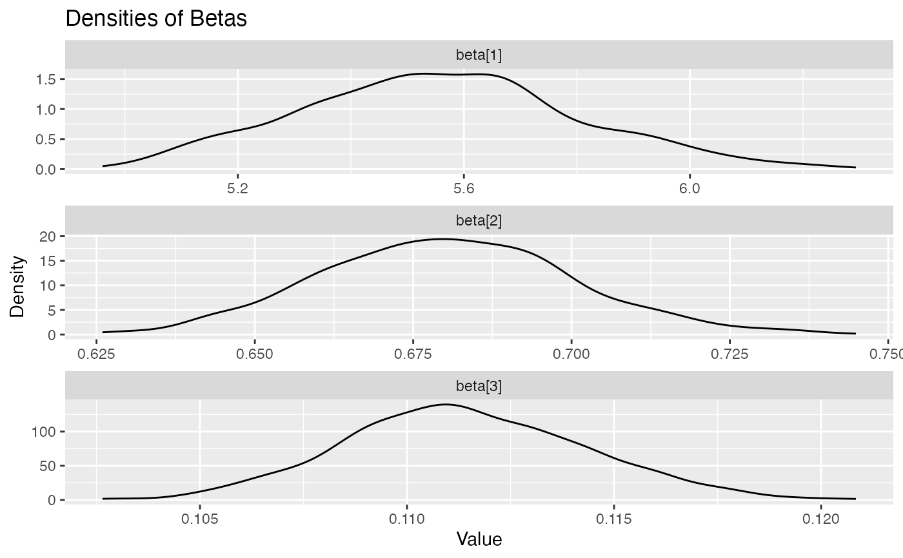
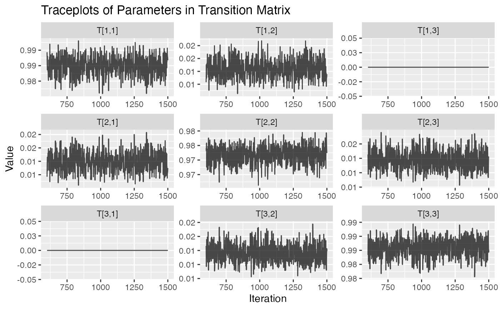
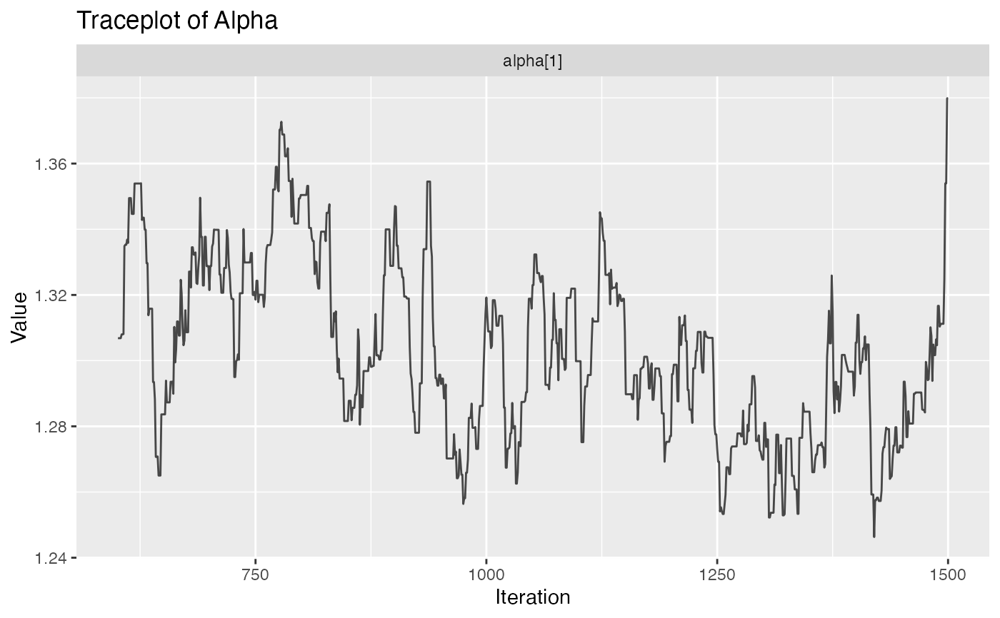
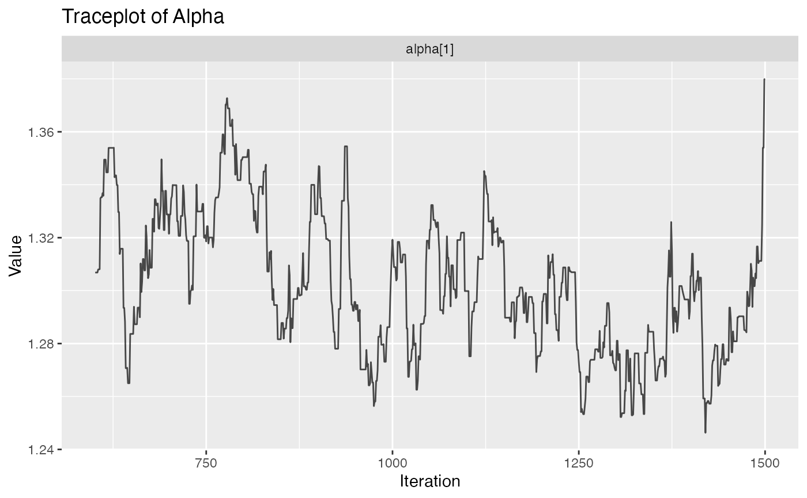

Plot Diagnostics for hmm_mcmc_gamma_poisson Objects
Source: R/MCMC_poisson.R
plot.hmm_mcmc_gamma_poisson.RdThis function creates a variety of diagnostic plots that can be useful when conducting Markov Chain Monte Carlo (MCMC) simulation of a gamma-poisson hidden Markov model (HMM). These plots will help to assess convergence, fit, and performance of the MCMC simulation
Usage
# S3 method for class 'hmm_mcmc_gamma_poisson'
plot(
x,
simulation = FALSE,
true_betas = NULL,
true_alpha = NULL,
true_mat_T = NULL,
true_states = NULL,
show_titles = TRUE,
log_statesplot = FALSE,
...
)Arguments
- x
(hmm_mcmc_gamma_poisson) HMM MCMC gamma-poisson object
- simulation
(logical); default is
simulation=FALSE, so the input data was empirical. If the input data was simulated, it must be setsimulation=TRUE.- true_betas
(numeric) true betas. To be used if
simulation=TRUE- true_alpha
(numeric) true alpha. To be used if
simulation=TRUE- true_mat_T
(matrix)
optional parameter; true transition matrix. To be used ifsimulation=TRUE- true_states
(integer)
optional parameter; true states. To be used ifsimulation=TRUE- show_titles
(logical) if
TRUEthen titles are shown for all graphs. By default,TRUE- log_statesplot
(logical) if
TRUEthen log-statesplots are shown. By default,FALSE- ...
not used
Value
Several diagnostic plots that can be used to evaluate the MCMC simulation of the gamma-poisson HMM
Examples
# \donttest{
plot(example_hmm_mcmc_gamma_poisson)
#> Registered S3 method overwritten by 'GGally':
#> method from
#> +.gg ggplot2



 



 # }
# }